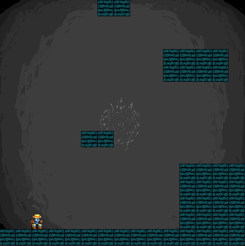
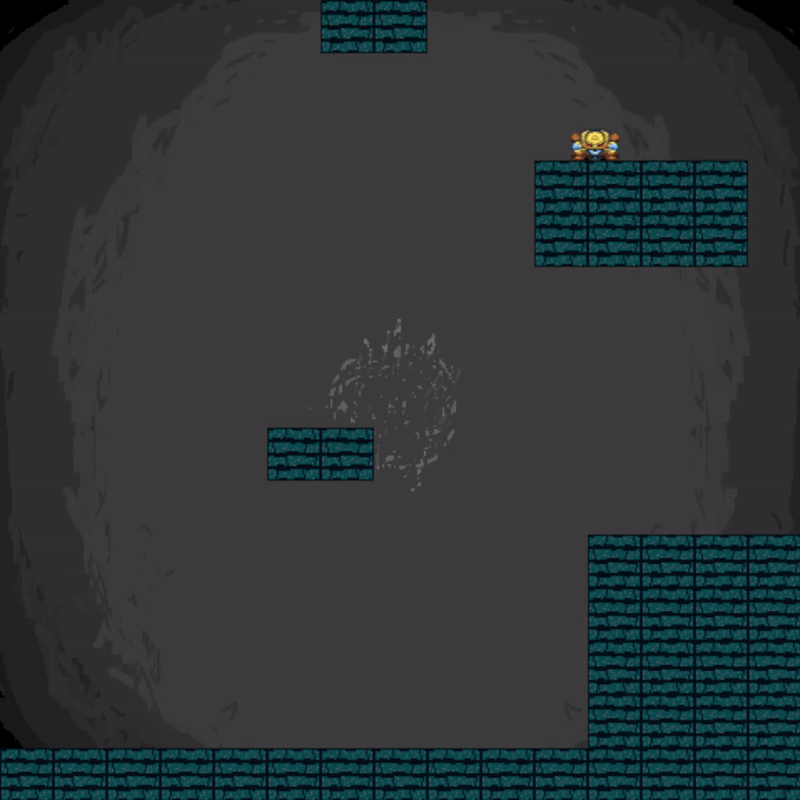
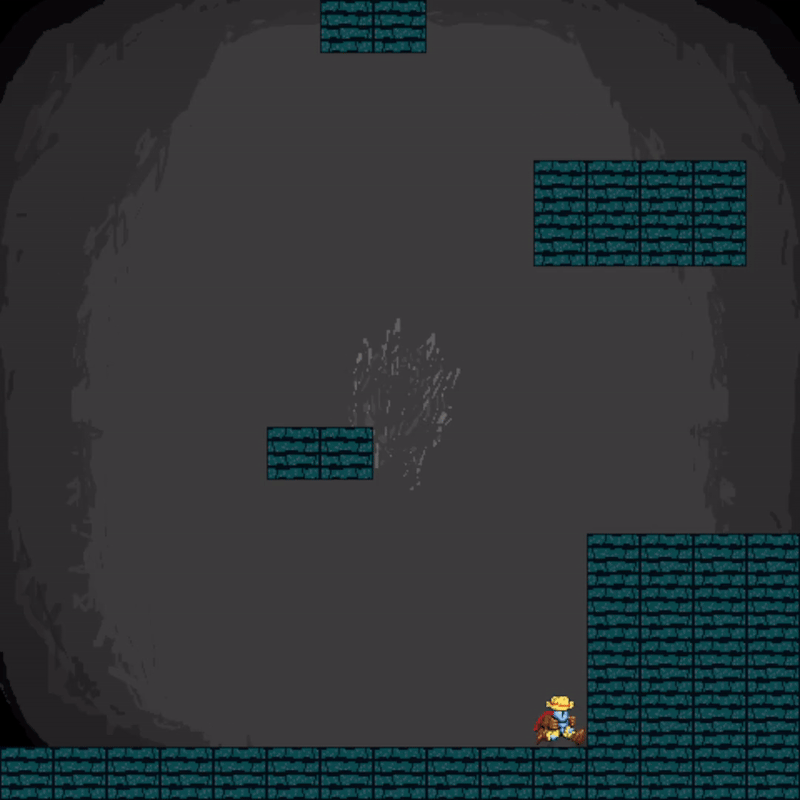
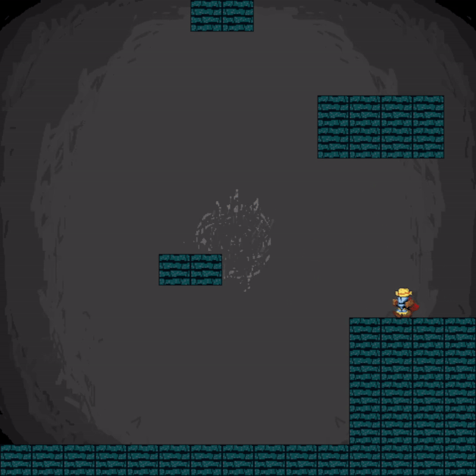

JumpKing Clone in C++
This was one of my first university projects and one of my first times
programming in C++. The goal of this project was to introduce me to a
more practical side of programming with C++ with a simple Pac-man
project, but I wanted to challenge myself, so I went to try and recreate
a basic version of jump king in this project. This was based on a
university framework called S2D and I did receive a lot of help from an
example project, but it was a notable example of how much I was given
when I previously worked in a game engine for my projects. In this I had
to create my own basic physics system, collision checks, camera system,
and map loader for my Jump King project, but I was also shown how to
implement sprites, animations, and sound effects from the tutorials
provided by the university.
Map Loader

The most notable part of my project was my map loader. The way it works
is I have a text document filled with dots representing air, and
underscores representing tiles, when the project starts up it reads the
document stores the information as a 2D char array. With this I can tell
where the tiles are supposed to be and inform the game where the air is
and where is a tile. The rest goes to the sprite loading for the tiles,
and the player’s physics for collision detection.
Camera System

The camera system was difficult to start with because in my head I just
could not predict how it would work, since I was so used to there just
being cameras built into game engines to handle this for me. I got
inspiration from a different student who was moving the map and
rendering what was only rendering what was in frame.
Using that I made it so when my character reaches the top or bottom of
the screen it moves the entire may up or down and sets the player’s
position to the opposite side of the screen to where they went to. And
since I would have to know how many levels up the player had to be to
move the screen, I used that to dictate what portion of the map had to
be rendered at the time.
Collision Checks

The collision checks were heavily inspired by an example project
provided by the university. In this the collisions were only limited to
where the player was, and one tile further than the player’s position.
This system was ideal since it limits the amount of checks I need to do
each frame to be only what the player could realistically interact with,
the position of each collidable tile was determined by where they were
place on the tile map, and would be offset by how many layers up the
player was in the game.
Using this collision check I was also able to determine what would
happen based on different types of collision, for example if they were
colliding to something below, I would set them as grounded, and if they
were hitting a wall, I was able to have them bounce off.
Regardless of what happens the collision will always offset the play in
the direction which they are intersecting with more with the tile, so if
they walk into a wall, they will be pushed back by the width they walked
into the wall with. This implementation has its bugs since sometimes
they could intersect more with a direction they did not approach from
especially when jumping, but it did not affect the game too badly.
Physics System

The last thing I implemented on my own was the physics system, and since
the collision checks worked so well it made this a lot easier. When the
player is grounded, I did not need to implement any physics, and when
they are not, they will get a force pushing them down that gets stronger
until it reaches a max. This gradual increase in force helped make the
jumping more arched and fit the game very well. There is other thing
that happens is when the player is air borne and hits a well, they get
their x velocity reversed which flips them around and creates a wall
bounce, I do the same thing with the y velocity when they hit their head
which makes it more punishing to do so.
Other Features
There were more things implemented which were heavily influenced by the
tutorials in the university, starting with sprite and sound loading,
which was implemented with the help of the S2D framework provided. The
animation system was made by moving the reference position of the sprite
sheet I was rendering from. I also implemented controls using input
checks from the S2D framework and setting velocity in the x and y axis
according to inputs.
>